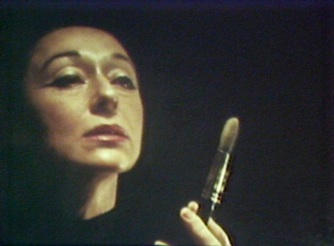

Presentations: Mike Olenick

Renate Druks (1921-2008) was a little known painter and filmmaker from Los Angeles. This presentation will include images, sounds, and video that show connections between her paintings and films to other work from the Los Angeles art and film scenes in the 1950’s-1970’s.
Renate is not well known today, though her circle of friends included many well known filmmakers, artists, and writers in the Los Angeles including Kenneth Anger, Anais Nin, and Curtis Harrington. Her influence is evident in the works of these three people, and their influence can be seen in some of her work. Renate liked to throw ‘theme’ parties to unveil her exotic paintings. One of her parties, a Halloween party called “Come As Your Madness,” was attended by Anger, Nin, and Harrington, among others. The guests and their costumes served as the inspiration for Anger’s film Inauguration of the Pleasure Dome, which also featured Renate and her son. Harrington and Druks were good friends for many decades. Renate’s film Spaceboy can be traced back to Harrington’s films Queen of Blood and Games, all three of which feature the actress Florence Marley. Druks also made an appearance in Harrington’s final film, Usher, wearing a dress that was also one of her paintings. While not a filmmaker, Anais Nin was Renate’s best friend, and Anais wrote two works about Renate – Collages and Portrait in Three Dimensions. The two of them collaborated on a screenplay based on Collages.
Mike Olenick is a filmmaker and editor whose work often deconstructs cinema. His films have screened at the World Wide Video Festival, L.A. Freewaves, Cinémathèque Française, Hamburg Film Festival, and in underground film festivals across the U.S. His video The Son of Samsonite screened on Dutch television and received an honorable mention at the Ann Arbor Film Festival. He is the recipient of an Ohio Arts Council Individual Artist Fellowship and his video Rabid won the Audience Award at Cinematexas.
Mike was the DP and editor of several works by Jennifer Reeder, including Seven Songs About Thunder (Best Narrative, Ann Arbor 2010). He also edited Lucy Raven’s China Town, an experimental photo documentary about global copper production, and co-edited (with John Gurdebeke) Guy Maddin’s Hauntings. Mike is currently working on two projects, All the Memory in the World, a feature film examining photographs in films, and a film about painter and filmmaker Renate Druks.
The Inauguration of Renate Druks
This presentation is part of the panel entitled Subcultures Scene and Seen, being held on Saturday November 13, 2010 1:00pm - 3:30pm in the Eileen Norris Cinema Theatre.
Left: A Painter’s Journal (1967)
by Renate Druks
